ខេត្តនៅក្នុងប្រទេសកម្ពុជា
សូមស្វាគមន៏មកកាន់ខេត្តឧត្តរមានជ័យ
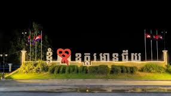
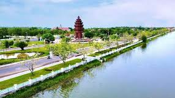
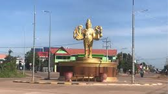
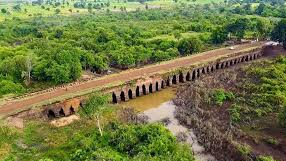
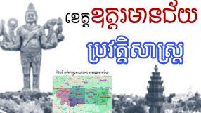
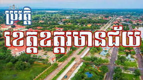
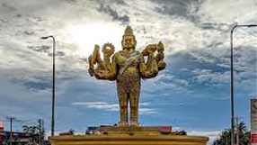
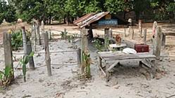
១. និរុត្តិសាស្ត្រ និងការបង្កើតខេត្ត
ឈ្មោះ “ឧត្តរមានជ័យ” ត្រូវបានកកើតឡើងពីពាក្យបាលីសំស្រ្តឹត ដែលមានន័យថា៖
ឧត្តរ (Uttarā): មានន័យថា «ទិសខាងជើង» ឬ «ទិសពាយព្យ»។
ជ័យ (Jaya): មានន័យថា «ជ័យជំនះ» ឬ «ជោគជ័យ»។
មាន: មានន័យថា «មាន»។
ដូច្នេះ ឧត្តរមានជ័យ មានន័យថា «មានជ័យជំនះនៅភាគខាងជើង»។ ឈ្មោះនេះជានិមិត្តរូបនៃការទទួលបានជោគជ័យ និងការបញ្ចប់សង្គ្រាមស៊ីវិលដ៏រ៉ាំរ៉ៃរបស់កម្ពុជា។
ការបង្កើតដំបូង: តំបន់ឧត្តរមានជ័យ ធ្លាប់ត្រូវបានរៀបចំជាខេត្តដំបូងនៅឆ្នាំ ១៩៦៤ ក្នុងសម័យសង្គមរាស្ត្រនិយមរបស់សម្តេច នរោត្តម សីហនុ ប៉ុន្តែក្រោយមកស្ថានភាពរដ្ឋបាលត្រូវបានផ្លាស់ប្តូរទៅជាស្រុកវិញ។
ការបង្កើតផ្លូវការ: ខេត្តឧត្តរមានជ័យ ត្រូវបានបង្កើតឡើងជាផ្លូវការវិញនៅឆ្នាំ ១៩៩៩ ដោយកាត់ចេញពីផ្នែកខាងជើងនៃខេត្តសៀមរាប និងផ្នែកខ្លះនៃខេត្តបន្ទាយមានជ័យ។
២. យុគសម័យអង្គរ និងការគ្រប់គ្រងបរទេស
សម័យបុរាណ: តំបន់ដែលជាខេត្តឧត្តរមានជ័យសព្វថ្ងៃ គឺជាផ្នែកមួយនៃ អាណាចក្រខ្មែរ ដែលមានរាជធានីនៅអង្គរ (សៀមរាប)។ ភស្តុតាងដែលបញ្ជាក់ពីប្រវត្តិសាស្រ្តបុរាណមានដូចជា ប្រាសាទបុរាណ ជាច្រើនកន្លែង (ប្រមាណ ១៨ កន្លែង) និងស្ពានបុរាណ ៧ កន្លែង។ ប្រាសាទសំខាន់ៗរួមមាន ប្រាសាទតាមន្ត និង ប្រាសាទព្រហ្មកិល។
តំបន់ព្រំដែន: ដោយសារទីតាំងនៅជាប់ជួរ ភ្នំដងរែក និងជាប់ព្រំប្រទល់ប្រទេសថៃ (សៀម) តំបន់នេះតែងតែជាតំបន់យុទ្ធសាស្ត្រដែលមានជម្លោះរវាងសៀម និងកម្ពុជា។
សម័យអាណាព្យាបាលបារាំង: តំបន់នេះត្រូវបានគ្រប់គ្រងដោយសៀម (ហៅថាខេត្ត ផាណុមសុខ Phibunsongkhram) ពីឆ្នាំ ១៩៤១ ដល់ ១៩៤៦ មុនពេលដែលបារាំងបានទាមទារយកមកវិញបន្ទាប់ពីបញ្ចប់សង្គ្រាមលោកលើកទី២។
៣. ដំណាក់កាលចុងក្រោយនៃខ្មែរក្រហម
ប្រវត្តិសាស្រ្តថ្មីៗនៃខេត្តឧត្តរមានជ័យត្រូវបានផ្សារភ្ជាប់យ៉ាងជិតស្និទ្ធជាមួយនឹង របបខ្មែរក្រហម។
មូលដ្ឋានទ័ពខ្មែរក្រហម: ដោយសារតែជាតំបន់ភ្នំ ព្រៃក្រាស់ និងជាប់ព្រំដែនថៃ តំបន់នេះ ជាពិសេសស្រុក អន្លង់វែង បានក្លាយជាទីជម្រក និងជា បន្ទាយចុងក្រោយ របស់មេដឹកនាំខ្មែរក្រហមចាប់ពីចុងទសវត្សរ៍ឆ្នាំ ១៩៨០ រហូតដល់ឆ្នាំ ១៩៩៨។
មេដឹកនាំ: បុគ្គលសំខាន់ៗដូចជា ប៉ុល ពត, តាម៉ុក (តា ម៉ូត), នួន ជា និង ខៀវ សំផន បានជ្រកកោន និងគ្រប់គ្រងចលនានយោបាយ និងយោធាចុងក្រោយរបស់ពួកគេនៅទីនេះ។
សមាហរណកម្មជាតិ: ជ័យជំនះ និងសមាហរណកម្មជាតិបានលេចឡើងនៅថ្ងៃទី ២៣ ខែមេសា ឆ្នាំ១៩៩៨ ដែលជាការបញ្ចប់ជាស្ថាពរនៃសង្គ្រាមស៊ីវិលដ៏រ៉ាំរ៉ៃនៅកម្ពុជា។
៤. ការអភិវឌ្ឍន៍បច្ចុប្បន្ន
ចាប់តាំងពីការបង្កើតផ្លូវការនៅឆ្នាំ ១៩៩៩ ខេត្តឧត្តរមានជ័យបានផ្តោតលើការអភិវឌ្ឍន៍ឡើងវិញ៖
ទេសចរណ៍ប្រវត្តិសាស្រ្ត (Dark Tourism): ស្រុក អន្លង់វែង ត្រូវបានរាជរដ្ឋាភិបាលកំណត់ជាតំបន់ប្រវត្តិសាស្រ្តជាតិ ដើម្បីឱ្យសាធារណជន និងភ្ញៀវទេសចរបានសិក្សាស្វែងយល់ពីប្រវត្តិសាស្រ្តខ្មែរក្រហម (រួមមានផ្ទះតាម៉ុក និងកន្លែងបូជាសពប៉ុល ពត)។
ការបោសសម្អាតមីន: ដោយសារតំបន់នេះជាសមរភូមិចុងក្រោយ ខេត្តឧត្តរមានជ័យនៅតែជាតំបន់មួយដែល មានមីនច្រើនជាងគេ ក្នុងប្រទេសកម្ពុជា ទាមទារឱ្យមានការបោសសម្អាតជាបន្តបន្ទាប់។
សេដ្ឋកិច្ច: សេដ្ឋកិច្ចខេត្តភាគច្រើនពឹងផ្អែកលើ កសិកម្ម និង ពាណិជ្ជកម្មអន្តរជាតិ តាមច្រកព្រំដែនអូរស្មាច់ ដែលមានការអភិវឌ្ឍន៍តំបន់រីស៊ត និងកាស៊ីណូ។
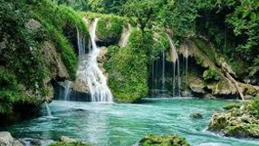
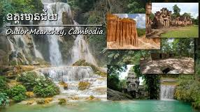
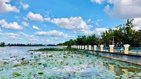
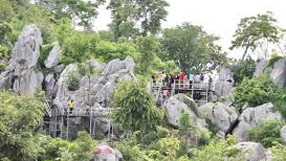
តំបន់ទេសចរណ៍ប្រវត្តិសាស្ត្រ និងវប្បធម៌
ខេត្តឧត្តរមានជ័យត្រូវបានគេស្គាល់យ៉ាងច្បាស់តាមរយៈតំបន់ដែលទាក់ទងនឹងប្រវត្តិសាស្ត្រនយោបាយនាពេលថ្មីៗនេះ៖
១. តំបន់ប្រវត្តិសាស្ត្រអន្លង់វែង
អន្លង់វែង ជាអតីតបន្ទាយចុងក្រោយបង្អស់របស់ចលនាខ្មែរក្រហម រហូតដល់ការបញ្ចប់សង្គ្រាមស៊ីវិលនៅឆ្នាំ ១៩៩៨។ តំបន់នេះទាក់ទាញភ្ញៀវទេសចរដែលចាប់អារម្មណ៍នឹង "ទេសចរណ៍ងងឹត" (Dark Tourism) ដើម្បីសិក្សាពីប្រវត្តិសាស្ត្រដ៏ជូរចត់៖
ផ្ទះរបស់តាម៉ុក (តា ម៉ូត): ជាផ្ទះរបស់មេបញ្ជាការយោធាខ្មែរក្រហមដ៏មានឥទ្ធិពលម្នាក់។
កន្លែងបូជាសពប៉ុល ពត: ជាទីតាំងដែលអតីតមេដឹកនាំខ្មែរក្រហម ប៉ុល ពត បានទទួលមរណភាព និងត្រូវបានបូជា។
ផ្ទះសំណាក់របស់តាម៉ុក: ត្រូវបានសាងសង់នៅលើកំពូលភ្នំដងរែក ដែលមានទេសភាពមើលចុះមកកាន់តំបន់ជុំវិញ។
២. ប្រាសាទបុរាណ
ខេត្តនេះស្ថិតនៅលើផ្លូវបុរាណនាសម័យអង្គរ ដែលមានសំណង់ប្រវត្តិសាស្ត្រជាច្រើននៅតាមបណ្តោយជួរភ្នំដងរែក៖
ប្រាសាទតាមន្ត (តា មាន់): ជាប្រាសាទបុរាណមួយស្ថិតនៅតាមបណ្តោយជួរភ្នំដងរែក ក្បែរព្រំដែនថៃ។
ប្រាសាទតាក្របី (តា ក្ៃរយ): ជាប្រាសាទបុរាណមួយផ្សេងទៀតស្ថិតនៅក្បែរប្រាសាទតាមន្ត។
ប្រាសាទព្រហ្មកិល និងស្ពានទេព: ជាសំណង់ប្រវត្តិសាស្ត្រដែលនៅសេសសល់តាំងពីសម័យអង្គរ។
តំបន់ទេសចរណ៍ធម្មជាតិ និងច្រកព្រំដែន
១. ច្រកព្រំដែនអន្តរជាតិអូរស្មាច់
ជាច្រកព្រំដែនដ៏សំខាន់សម្រាប់ភ្ជាប់ទំនាក់ទំនងពាណិជ្ជកម្ម និងទេសចរណ៍ជាមួយប្រទេសថៃ។ នៅតំបន់ច្រកនេះ មានការអភិវឌ្ឍជា ទីក្រុងកាស៊ីណូ រីស៊ត និងសណ្ឋាគារ ដើម្បីបម្រើសេវាកម្មកម្សាន្ត។
២. រមណីយដ្ឋានធម្មជាតិ
បឹងស្នោរ: ជារមណីយដ្ឋានធម្មជាតិមួយដែលត្រូវបានរៀបចំសម្រាប់រៀបចំពិធីបុណ្យប្រពៃណី និងទាក់ទាញភ្ញៀវទេសចរក្នុងតំបន់។
ទឹកជ្រោះឡាអងតាតុង (ទឹកជ្រោះចំប៉ី): ស្ថិតនៅចម្ងាយប្រមាណ ៣៥ គីឡូម៉ែត្រពីទីរួមខេត្ត។
តំបន់ភ្នំដងរែក: ផ្ទៃដីព្រៃឈើ និងភ្នំនៅភាគខាងជើងនៃខេត្ត ផ្តល់នូវសក្តានុពលសម្រាប់ អេកូទេសចរណ៍ និងការឡើងភ្នំ។
កិច្ចពិចារណាសម្រាប់ដំណើរទេសចរណ៍
ដោយសារខេត្តឧត្តរមានជ័យជាអតីតតំបន់សមរភូមិចុងក្រោយនៃសង្គ្រាមស៊ីវិល៖
មីន និងយុទ្ធភណ្ឌមិនទាន់ផ្ទុះ: ភ្ញៀវទេសចរគួរតែធ្វើដំណើរតែលើ ផ្លូវដែលបានកំណត់ និងទីតាំងដែលបានបោសសម្អាតរួចហើយប៉ុណ្ណោះ ហើយមិនត្រូវដើរចូលទៅក្នុងព្រៃ ឬតំបន់ដាច់ស្រយាលដោយគ្មានមគ្គុទ្ទេសក៍ឡើយ។
ហេដ្ឋារចនាសម្ព័ន្ធ: ហេដ្ឋារចនាសម្ព័ន្ធនៅតាមតំបន់ដាច់ស្រយាលមួយចំនួននៅមិនទាន់មានការអភិវឌ្ឍពេញលេញនៅឡើយទេ។
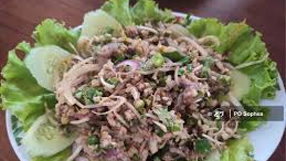

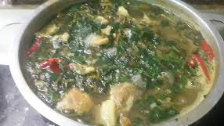
ខេត្តឧត្តរមានជ័យ ជាខេត្តមួយដែលមិនទាន់មានមុខម្ហូបពិសេសល្បីល្បាញដាច់ដោយឡែកពីខេត្តដទៃដូចជាខេត្តនៅតាមមាត់សមុទ្រ ឬតាមដងទន្លេនោះទេ តែអ្នកអាចរកបាននូវមុខម្ហូបខ្មែរទូទៅដែលពេញនិយមប្រើប្រាស់វត្ថុធាតុដើមតាមតំបន់។
មុខម្ហូបដែលអ្នកអាចរកបាន និងគួរតែសាកល្បងនៅខេត្តឧត្តរមានជ័យរួមមាន៖
១. មុខម្ហូបខ្មែរទូទៅដែលមានប្រជាប្រិយភាព
ដោយសារខេត្តឧត្តរមានជ័យជាតំបន់ដាំដុះ និងជាខេត្តជាប់ព្រំដែន មុខម្ហូបភាគច្រើនផ្អែកលើត្រីទឹកសាប សាច់ និងបន្លែក្នុងស្រុក៖
អាម៉ុក (Amok): មុខម្ហូបនេះមានស្ទើរគ្រប់ទីកន្លែងក្នុងប្រទេសកម្ពុជា រួមទាំងនៅឧត្តរមានជ័យផងដែរ។ វាជា ប្រហុកត្រីចំហុយ ជាមួយនឹងគ្រឿងផ្សំពិសេស ខ្ទិះដូង និងស្លឹកញ ដែលមានរសជាតិឈ្ងុយឆ្ងាញ់។
សម្លរកកូរ (Samlor Korkor): ជាសម្លរជាតិដ៏មានឱជារស ដែលលាយគ្រឿងទេសជាច្រើនមុខ និងបន្លែចម្រុះ ដោយមានបន្ថែម ប្រហុក ដើម្បីបង្កើនរសជាតិ។ សម្លរកកូរ ត្រូវបានគេចាត់ទុកជាសម្លរបែបប្រពៃណីខ្មែរ។
នំបញ្ចុក (Nom Banh Chok): ជាគុយទាវស្រស់ធ្វើពីអង្ករ ទទួលទានជាមួយនឹង សម្លរខ្មែរ ដែលជាសម្លរត្រីមានពណ៌បៃតង ធ្វើពីស្លឹកគ្រៃ រមៀត ក្រូចសើច និងបន្លែស្រស់ៗ។
ត្រីអាំង ឬសាច់អាំង: ដោយសារតំបន់នេះសម្បូរព្រៃភ្នំ និងនៅជិតប្រភពទឹក អ្នកអាចរកបាននូវ សាច់ និងត្រីទឹកសាបអាំង ដែលប្រឡាក់គ្រឿងទេសខ្មែរ ហើយអាំងក្តៅៗ ទទួលទានជាមួយបាយ ឬបន្លែស្រស់។
២. អាហារដែលត្រូវសាកល្បងក្នុងតំបន់
ក្រឡាន (Kralan): ជាបង្អែមបែបប្រពៃណីរបស់ខ្មែរ។ បាយដំណើបស្ងោរ ដែលលាយជាមួយខ្ទិះដូង សណ្តែក (ឬពេលខ្លះដាក់សាច់) ហើយច្រកចូលទៅក្នុងបំពង់ឬស្សី រួចយកទៅដុតលើរងើកភ្លើង។ ក្រឡានមានលក់នៅតាមផ្លូវ និងតាមទីផ្សារនានា។
ម្ហូបតាមផ្លូវ និងនៅផ្សារកណ្តាល: ដូចទៅនឹងតំបន់ជនបទដទៃដែរ ទីរួមខេត្ត សំរោង និងទីប្រជុំជន អន្លង់វែង មានតូបលក់អាហារក្នុងផ្សារកណ្តាល ដែលមានលក់ម្ហូបដែលបានចម្អិនរួចជាស្រេច (ហៅថា ម្ហូបឆ្នាំង) ដូចជាគុយទាវចិន គុយទាវខ្មែរ និងម្ហូបឆាខ្មែរជាច្រើនប្រភេទ។
៣. តំបន់អាហារពិសេស
ដោយសារឧត្តរមានជ័យជាខេត្តជាប់ព្រំដែនថៃ ចំណីអាហារត្រូវបានបែងចែកតាមតំបន់៖
អូរស្មាច់ (O’Smach): តំបន់ព្រំដែននេះ មានការអភិវឌ្ឍជា រីស៊ត និងកាស៊ីណូ ដូច្នេះអ្នកអាចរកបានភោជនីយដ្ឋានដែលមានអាហារប្លែកៗ (មានទាំងអាហារបែបខ្មែរ ថៃ និងខ្លះមានអាហារបែបលោកខាងលិច) ដើម្បីបម្រើភ្ញៀវទេសចរ។
អន្លង់វែង: នៅជុំវិញតំបន់ទេសចរណ៍ប្រវត្តិសាស្ត្រ (ដូចជា ផ្ទះតាម៉ុក ឬ Peace Observatory) មានតូបលក់ដូរដែលផ្តល់នូវម្ហូបខ្មែរធម្មតា សម្រាប់អ្នកទេសចរជាតិ និងអន្តរជាតិ។
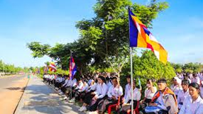
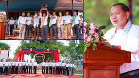
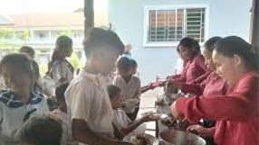
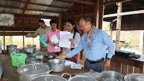
ខេត្តឧត្តរមានជ័យ ជាខេត្តមួយដែលធ្លាប់រងផលប៉ះពាល់ខ្លាំងពីសង្គ្រាមស៊ីវិល ប៉ុន្តែបច្ចុប្បន្នកំពុងមានការស្តារ និងអភិវឌ្ឍឡើងវិញ។ របៀបរស់នៅរបស់ប្រជាជននៅទីនេះមានលក្ខណៈពិសេសដោយសារទីតាំង ជាប់ព្រំដែន និង ធនធានព្រៃឈើ។
ព័ត៌មានទូទៅអំពីប្រជាជន
ចំនួនប្រជាជន: ខេត្តឧត្តរមានជ័យមានប្រជាជនតិចបើប្រៀបធៀបទៅនឹងខេត្តដទៃ ដែលមានប្រមាណ ២៧៦.០៤៩ នាក់ (តាមជំរឿនឆ្នាំ ២០២២)។
ដង់ស៊ីតេ: ជាខេត្តមួយដែលមានដង់ស៊ីតេប្រជាជនទាប។
ការតាំងទីលំនៅ: ប្រជាជនភាគច្រើនប្រមូលផ្តុំរស់នៅតាមបណ្តោយផ្លូវជាតិសំខាន់ៗ ពិសេសនៅក្រុង សំរោង (ទីរួមខេត្ត) និងតំបន់ជុំវិញ ច្រកព្រំដែនអូរស្មាច់ និងតំបន់ អន្លង់វែង ដែលជាទីតាំងប្រវត្តិសាស្ត្រ។
របៀបរស់នៅ និងមុខរបរសំខាន់ៗ
ជីវភាពរបស់ប្រជាជនឧត្តរមានជ័យ គឺពឹងផ្អែកយ៉ាងខ្លាំងទៅលើវិស័យ កសិកម្ម និង ពាណិជ្ជកម្មព្រំដែន។
១. វិស័យកសិកម្ម (មុខរបរចម្បង)
កសិករ: ប្រជាជនភាគច្រើនលើសលប់ប្រកបរបរជា កសិករ។
ដំណាំចម្បង:
ដំណាំឧស្សាហកម្ម: ដោយសារតំបន់ខ្លះមានដីខ្ពង់រាប និងជិតព្រៃ ប្រជាជននិយមដាំដុះដំណាំឧស្សាហកម្មដូចជា ដំឡូងមី, ស្វាយចន្ទី, និង កៅស៊ូ ដែលត្រូវបាននាំចេញទៅកាន់ប្រទេសជិតខាង។
ដំណាំស្បៀង: ដាំដុះ ស្រូវ នៅតំបន់វាលរាប និងដំណាំរួមផ្សំផ្សេងទៀត។
ការកាប់ឈើ និងអនុផលព្រៃឈើ: ទោះបីជាការកាប់ឈើទ្រង់ទ្រាយធម៌ត្រូវបានហាមឃាត់ក៏ដោយ ក៏ប្រជាជនខ្លះនៅតែប្រមូលផល អនុផលព្រៃឈើ (ដូចជាជ័រទឹក ថ្នាំបុរាណ) ដើម្បីចិញ្ចឹមជីវិត។
២. វិស័យពាណិជ្ជកម្ម និងសេវាកម្មព្រំដែន
ច្រកអូរស្មាច់: របៀបរស់នៅរបស់អ្នកស្រុកនៅតំបន់នេះ គឺផ្អែកលើ ពាណិជ្ជកម្ម រវាងកម្ពុជា និងថៃ។ មុខរបរមានដូចជាការ ដឹកជញ្ជូនទំនិញ, បម្រើការងារ ក្នុងកាស៊ីណូ និងរីស៊ត (នៅច្រកព្រំដែន), ឬលក់ដូរ ចំណីអាហារ និង ទំនិញ ផ្សេងៗ។
៣. ជីវភាពប្រចាំថ្ងៃ
ភាពក្រីក្រ: ខេត្តឧត្តរមានជ័យ នៅតែជាខេត្តមួយដែលត្រូវបានចាត់ទុកថាមានអត្រាភាពក្រីក្រខ្ពស់ជាងខេត្តកណ្តាលមួយចំនួន។ របៀបរស់នៅរបស់គ្រួសារខ្លះមានលក្ខណៈលំបាក ដោយសារខ្វះខាតហេដ្ឋារចនាសម្ព័ន្ធ (ដូចជាផ្លូវថ្នល់ និងអគ្គិសនី) និងដីស្រែមិនមានប្រព័ន្ធធារាសាស្រ្តគ្រប់គ្រាន់។
សន្តិសុខ: ចាប់តាំងពីការបញ្ចប់សង្គ្រាមស៊ីវិល ជីវិតរស់នៅមានភាពប្រសើរឡើងច្រើន ប៉ុន្តែនៅតាមតំបន់ដាច់ស្រយាលនៅតែត្រូវការការប្រុងប្រយ័ត្នខ្ពស់ចំពោះ មីន និងយុទ្ធភណ្ឌមិនទាន់ផ្ទុះ ដែលបន្សល់ទុកពីសង្គ្រាម។ យូរៗម្តង ប្រជាជនជួបគ្រោះថ្នាក់ដោយសារបញ្ហានេះ។
ជនជាតិភាគតិច
ដូចទៅនឹងខេត្តភាគពាយ័ព្យដទៃដែរ ខេត្តឧត្តរមានជ័យមានវត្តមានជនជាតិខ្មែរជាធំ ប៉ុន្តែក៏មានវត្តមានជនជាតិដើមភាគតិចមួយចំនួនតូច ដែលភាគច្រើនមានទំនាក់ទំនងជាមួយក្រុមជនជាតិដើមភាគតិចនៅតាមជួរភ្នំដងរែក។
សរុបមក របៀបរស់នៅរបស់ប្រជាជនឧត្តរមានជ័យ ឆ្លុះបញ្ចាំងពីការតស៊ូស្តារឡើងវិញពីប្រវត្តិសាស្ត្រដ៏ជូរចត់ និងការប្តេជ្ញាចិត្តប្រកបរបរចិញ្ចឹមជីវិតដោយពឹងផ្អែកលើដីធ្លី និងឱកាសសេដ្ឋកិច្ចដែលកើតចេញពីព្រំដែន។
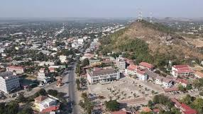
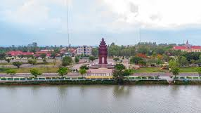
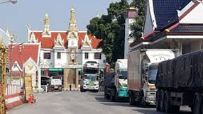
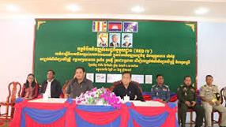
ទិដ្ឋភាពទូទៅនៃសេដ្ឋកិច្ច
ខេត្តឧត្តរមានជ័យ គឺជាខេត្តមួយក្នុងចំណោមខេត្តដែលងាយរងគ្រោះ និងមានការអភិវឌ្ឍយឺតយ៉ាវជាងគេមួយចំនួនរបស់កម្ពុជា ដោយសារតែប្រវត្តិសាស្ត្រនៃការបោះជំរុំចុងក្រោយរបស់ខ្មែរក្រហម និងភាពដាច់ស្រយាលនៃទីតាំង។
១. វិស័យកសិកម្ម (មូលដ្ឋានគ្រឹះ)
កសិកម្មនៅតែជាឆ្អឹងខ្នងនៃសេដ្ឋកិច្ច និងជាមុខរបរចម្បងរបស់ប្រជាជនភាគច្រើន៖
ដំណាំឧស្សាហកម្ម: ដោយសារខេត្តនេះមានដីក្រហមសមស្រប និងជាតំបន់ខ្ពង់រាប ដំណាំនាំមុខគេគឺ ដំឡូងមី និង ស្វាយចន្ទី។ ដំណាំទាំងនេះត្រូវ បាននាំចេញជាលក្ខណៈផលិតផលកែច្នៃបឋមទៅកាន់ប្រទេសជិតខាង (ភាគច្រើនថៃ)។
ដំណាំស្បៀង: ការដាំដុះ ស្រូវ នៅតែសំខាន់សម្រាប់សន្តិសុខស្បៀង។
សក្តានុពលព្រៃឈើ: តំបន់មួយចំនួនត្រូវបានផ្តល់ជា សម្បទានដីសេដ្ឋកិច្ច (ELCs) សម្រាប់ការដាំដំណាំឧស្សាហកម្មទ្រង់ទ្រាយធំ ដូចជាកៅស៊ូ និងឈើហូបផ្លែ។
២. វិស័យពាណិជ្ជកម្ម និងសេវាកម្មព្រំដែន (កម្លាំងចលករថ្មី)
សកម្មភាពសេដ្ឋកិច្ចសំខាន់មួយទៀត គឺការតភ្ជាប់ទៅនឹងព្រំដែនអន្តរជាតិ៖
ច្រកអូរស្មាច់: ជាច្រកទ្វារសេដ្ឋកិច្ចដ៏សំខាន់សម្រាប់ខេត្ត។ ពាណិជ្ជកម្មឆ្លងដែន ជាមួយប្រទេសថៃ (ការនាំចេញកសិផល និងការនាំចូលទំនិញប្រើប្រាស់) បង្កើតនូវលំហូរទំនិញ និងសាច់ប្រាក់។
ទេសចរណ៍ និងល្បែងកម្សាន្ត: នៅតំបន់ព្រំដែន អូរស្មាច់ មានការអភិវឌ្ឍរីស៊ត និង កាស៊ីណូ ដែលទាក់ទាញភ្ញៀវមកពីប្រទេសថៃ និងបង្កើតការងារសេវាកម្មសម្រាប់ប្រជាជនក្នុងតំបន់។
ការអភិវឌ្ឍន៍ និងបញ្ហាប្រឈម
ការអភិវឌ្ឍន៍ខេត្តឧត្តរមានជ័យ ត្រូវបានដាក់ចេញនូវផែនការជាអាទិភាពដើម្បីទាញយកប្រយោជន៍ពីទីតាំងភូមិសាស្ត្ររបស់ខ្លួន។
១. ការអភិវឌ្ឍហេដ្ឋារចនាសម្ព័ន្ធ
ផ្លូវថ្នល់: ការជួសជុល និងសាងសង់ផ្លូវថ្នល់ជាតិ និងផ្លូវជនបទសំខាន់ៗ គឺជាគន្លឹះដើម្បីភ្ជាប់ខេត្តនេះជាមួយបណ្តាញសេដ្ឋកិច្ច (ឧទាហរណ៍ ផ្លូវជាតិលេខ ៦៨ ទៅសៀមរាប) និងសម្រួលដល់ការដឹកជញ្ជូនកសិផលទៅកាន់ទីផ្សារ ឬច្រកព្រំដែន។
អគ្គិសនី: ការផ្តល់សេវាអគ្គិសនីនៅតែមានកម្រិតនៅតាមតំបន់ជនបទដាច់ស្រយាលមួយចំនួន ដែលជាបញ្ហាប្រឈមដល់ការវិនិយោគ និងជីវភាពរស់នៅ។
២. ការអភិវឌ្ឍន៍ទេសចរណ៍
ទេសចរណ៍ប្រវត្តិសាស្ត្រ: រដ្ឋាភិបាលបានខិតខំប្រែក្លាយតំបន់ អន្លង់វែង ទៅជា តំបន់ប្រវត្តិសាស្ត្រ ដើម្បីទាក់ទាញភ្ញៀវទេសចរដែលចាប់អារម្មណ៍សិក្សាពីដំណាក់កាលចុងក្រោយនៃខ្មែរក្រហម ដូចជាផ្ទះតាម៉ុក និងកន្លែងបូជាសព ប៉ុល ពត។
ទេសចរណ៍វប្បធម៌ និងធម្មជាតិ: ការអភិវឌ្ឍប្រាសាទបុរាណ និងរមណីយដ្ឋានធម្មជាតិ (ដូចជាទឹកជ្រោះ) ក៏ជាផែនការអាទិភាពដែរ។
៣. បញ្ហាប្រឈមធំៗ
មីន និងយុទ្ធភណ្ឌមិនទាន់ផ្ទុះ (UXO): គឺជាឧបសគ្គធំបំផុតសម្រាប់ការអភិវឌ្ឍដីធ្លី និងហេដ្ឋារចនាសម្ព័ន្ធ។ ខេត្តនេះនៅតែជាតំបន់ដែលត្រូវការ ការបោសសម្អាតមីន ជាប្រចាំ ដើម្បីធានាសុវត្ថិភាព និងបង្កើនផ្ទៃដីកសិកម្ម។
ភាពក្រីក្រ: អត្រាភាពក្រីក្រនៅតែមានកម្រិតខ្ពស់ ហើយសេដ្ឋកិច្ចមានភាពផុយស្រួយ ដោយសារតែពឹងផ្អែកខ្លាំងលើតម្លៃកសិផល និងលំហូរពាណិជ្ជកម្មតាមព្រំដែន។